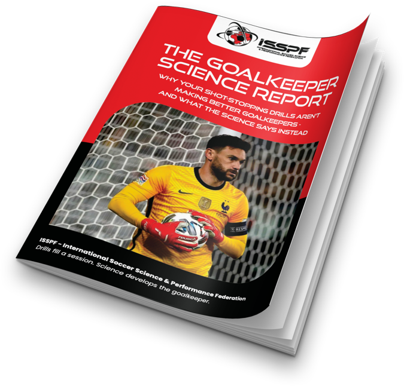

Endorsed & Accredited By Leading Universities And Elite Clubs

The science of goalkeeping that almost no coaching course teaches.
The four stages of a save. The 775-goal study almost no grassroots coach has seen. The 15-question diagnostic that shows you exactly where your sessions are falling short.
Built by a faculty from Borussia Mönchengladbach, FC Barcelona, Nottingham Forest, Dinamo Zagreb, Chelsea FC and the Scottish FA.
Read by goalkeeper coaches in 70+ countries. Rated 4.4/5 from 76 verified reviews on Trustpilot.

Endorsed & Accredited By Leading Universities And Elite Clubs
Most coaches only have one.
WHAT knowledge is the drills. The footwork. The handling sets. The shapes you run on Tuesday. It's what every coaching course, YouTube channel and inherited session plan gives you.
WHY knowledge is the science underneath. Why that footwork pattern works at the body level. What your goalkeeper's brain is actually doing in the split second before the shot. Why Tuesday's session should look completely different from Thursday's.
Most goalkeeper coaches have a lot of WHAT. Almost none have any WHY.
Once you see the difference, you can't unsee it.
A 23-page PDF on the science behind goalkeeper development. Read it before Tuesday's training.
Free report. Instant access. Unsubscribe in one click.
The Goalkeeper Science Report is drawn from teaching by ISSPF faculty currently working in:
ISSPF courses are accredited by leading universities and rated 4.4 out of 5 from 76 verified Trustpilot reviews. We've taught coaches in over 70 countries.
If any of that sounds familiar, the report will land hard.
Free report. Instant access. We send a few follow-up emails over the next week with more of the science. Unsubscribe in one click any time.